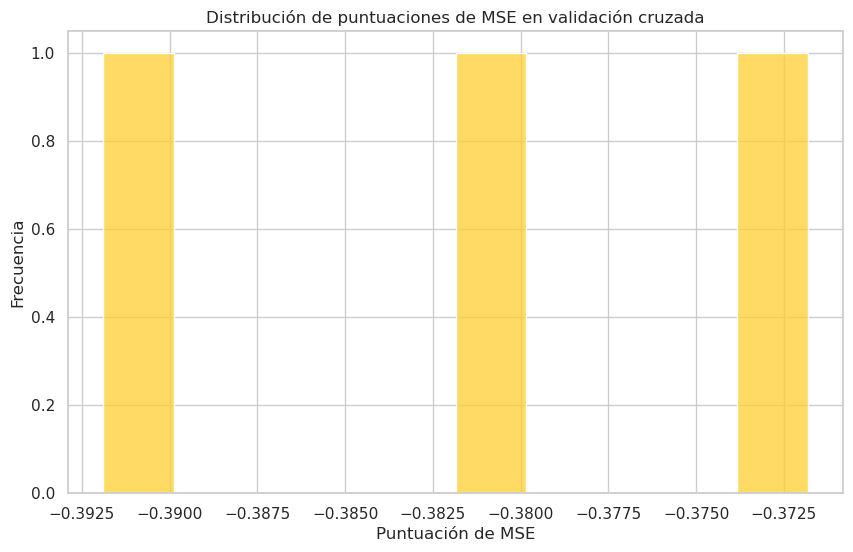
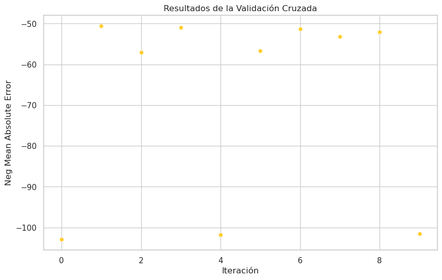

Análisis Detallado y Simple del Proyecto
Cross Validation con DecisionTreeRegressor
MSE (Error Cuadrático Medio):
- Los resultados del MSE para cada fold fueron: [-0.37781109, -0.38888889, -0.39189189]. - El promedio del MSE es de aproximadamente 0.3862.
K-Fold Split
División K-Fold:
- Se proporcionan los índices de entrenamiento y prueba para cada fold.
RandomizedSearchCV con RandomForestRegressor
Mejor Estimador:
- El mejor estimador encontrado por RandomizedSearchCV es un RandomForestRegressor con 5 estimadores y una profundidad máxima de 9.
Mejores Parámetros:
- Los mejores parámetros son: {'n_estimators': 5, 'max_depth': 9, 'criterion': 'squared_error'}.
Predicción para una Muestra:
- La predicción para una muestra específica es de $328.2.
Cross Validation con DecisionTreeRegressor
Modelo Utilizado:
- DecisionTreeRegressor para regresión.
Librerías y Lenguaje de Programación:
- Lenguaje de Programación: Python. - Librerías: pandas para manipulación de datos, sklearn para modelos de regresión y métricas.
Base de Datos:
- El análisis se realizó en un conjunto de datos de comportamiento de consumidores de comercio electrónico (ECommerce_consumer_behaviour.csv).
RandomizedSearchCV con RandomForestRegressor
Modelo Utilizado:
- RandomForestRegressor para regresión.
Librerías y Lenguaje de Programación:
- Lenguaje de Programación: Python. - Librerías: pandas para manipulación de datos, sklearn para modelos de regresión y búsqueda de hiperparámetros.
Base de Datos:
- El análisis se llevó a cabo en un conjunto de datos de información sobre diamantes (diamonds.csv).
Proceso ETL:
Cross Validation con DecisionTreeRegressor
Carga de Datos:
- Se leyó el conjunto de datos de comportamiento de consumidores de comercio electrónico.
Preprocesamiento:
- Se separaron las características (X) y la variable objetivo (y).
Modelo DecisionTreeRegressor:
- Se utilizó Cross Validation con DecisionTreeRegressor para evaluar el rendimiento del modelo.
RandomizedSearchCV con RandomForestRegressor
Carga de Datos:
- Se leyó el conjunto de datos de información sobre diamantes.
Preprocesamiento:
- Se separaron las características (X) y la variable objetivo (y).
Modelo RandomForestRegressor
- Se utilizó RandomizedSearchCV para buscar los mejores hiperparámetros del modelo.
Conclusiones Finales del Proyecto:
Cross Validation con DecisionTreeRegressor:
- El MSE proporciona una medida de la calidad del modelo, indicando la magnitud de los errores cuadráticos medios. - La técnica de Cross Validation permite evaluar el rendimiento del modelo en diferentes conjuntos de datos de prueba, proporcionando una visión más robusta del rendimiento del modelo.
RandomizedSearchCV con RandomForestRegressor:
- La búsqueda aleatoria de hiperparámetros reveló que un RandomForestRegressor con 5 estimadores y una profundidad máxima de 9 tiene un buen rendimiento para predecir el precio de los diamantes. - Este proceso ilustra la importancia de ajustar los hiperparámetros para mejorar el rendimiento del modelo.
En resumen, la combinación de técnicas como Cross Validation y RandomizedSearchCV permite evaluar y afinar modelos de manera efectiva, proporcionando una base sólida para la toma de decisiones en el análisis de datos.
Repositorio
Si deseas validar cómo se construyó el algoritmo y la base de datos, puedes visitar el siguiente enlace. Allí encontrarás todos los detalles del código y los datos utilizados en este proyecto.
 👉 Haz clic aquí 👈
👉 Haz clic aquí 👈